Мероприятие «3 Quilombo Cultural», Graz, Austria (Capoeira Senzala)
Очередной любви к Сензале пост.
Песня «Se quiser me ver, arrodeia o mar tres vezes» оказывается для меня пророческой. В этот раз, чтобы увидеть любимую Сензалу, пришлось пересечь не три моря, но три страны. Питер-Прага-Будапешт-Грац – такой был маршрут путешествия на третий фестиваль Quilombo Cultural, группы Centro Cultural Senzala de Capoeira, где наш знакомый Professor Kapacete организовал хорошую подборку участников:
Mestre Zumbi
Mestre Pulmao
CM Chiquinho
CM Luis Claudio
CM Panaca (Capoeira Brasil)
Prof. Duende (Grupo Vadiando Capoeira)
Prof. Kapacete
Special guest: Mestre Xuxo (CDO)
Не буду травить вам душу рассказами о цветущих вишнях в Европе, постараюсь только о капоэйре. В Праге капоэйра была представлена разве что нами в ночи на старинной городской площади. Даже видео есть, может, будет выложено.
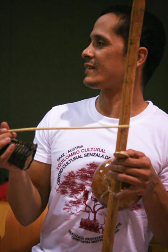В Будапеште удалось попасть на тренировку для старших поясов от CM Chiquinho, после чего пришлось признать мировой заговор тренеров в их увлечении кроссфитом, будь он неладен. У Шикиньу отличный темп тренировки и хорошая нагрузка. Физуха чередуется с отработкой cintura desprezada (новое увлечение контрамастера), с игрой по парам, снова с физухой, с отработкой связок, в конце для выживших рода с попыткой вставить новые сложные элементы. Мы даже после двух перелетов и отсутствия сна выжили, вполне достойно поиграли, познакомились с венгерскими капоэйристами и неплохо настроились на путешествие в австрийский Грац. Что касается венгерских капоэйристов – из всех сензальских девушек, у Шикиньу – самые крутые! (Когда-нибудь девочки Луиса Клаудио догонят, если он от них на Занзибар не уедет, как грозится) И да, все обязательно поезжайте в дивный дивный дивный Будапешт, бродить и любоваться!
В Грац мы поехали вместе с CM Chiquino, Mestre Pulmao, с нами же отправились еще местные преподаватели из Vadiando capoeira – professor Duende с удивительным голосом (уж на что мы фанаты Тони Варгаса, но как поет этот человек – это отдельного рода фантастика!) и Capoeira Brasil – CM Panaca (получил от нас ласковое прозвище „Наша Панака“ и здорово выручил нас в конце путешествия; пользуясь случаем, желаю ему долгих лет и здоровья).
Когда мы приехали, австрийцев уже второй день гонял Mestre Xuxo, отчего народ был уже просветленный, счастливый и изумленный. Жаль, что фотоаппарат у меня был еще далеко в рюкзаке, я не привезла ни одной фотографии этого мастера, его космический образ остался только в моей голове. Mestre Xuxo говорит: «Я ничего не скрываю, я вкладываю всего себя в капоэйру, и по моей капоэйре вы можете судить о том, какой я». В таком случае у меня возникает вопрос: как это возможно? Как люди такими становятся? Где берут такие силы, такую энергию, такое вдохновение, такую харизму? Как они себя такими создают? Я хочу так же, научите. И ведь этому абсолютно точно нельзя научить – на мой взгляд, его тренировки с точки зрения капоэйры для сензальцев были совершенно бессмысленны. Повторять за ним его жесты бесполезно, можно только вдохновляться им и под этим вдохновением растить из себя такую же крутую цельную личность. В общем, мой вывод такой – Mestre Xuxo был завезен в Грац из космоса исключительно pra inspirar. Мне удалось позаниматься с ним половину тренировки, послушать его пение, понаблюдать за ним в роде (Mestre Pulmao хорошенько его погонял, но даже пропущенные удары не поубавили шушовской харизмы) и рассказать, что у меня дома тоже есть CDO. После этого Шушу уехал инспирировать норвежцев, а мы остались в Граце.
Мероприятие Quilombo Cultural проводится в Граце уже третий раз и, как я понимаю, каждый раз организаторы стремятся придумать что-то интересное, культурное и полезное. В этот раз они показывали фильм “O Zelador” с любимым многими из нас Mestre Russo. Впрочем, вместо просмотра мы отправились искать приключений в вечернем Граце)))
Самое интересное началось, когда мы приехали, когда приехали все оставшиеся мастера – Mestre Zumbi из Нью-Йорка, CM E.T. из Лиссабона, моя главная звезда CM Luis Claudio из Словении. К слову, моя звезда после сальто на Занзибаре приехала с поврежденной ногой, так что играла мало, в основном, раскачивала батерию. Тем не менее, информационный улов есть.
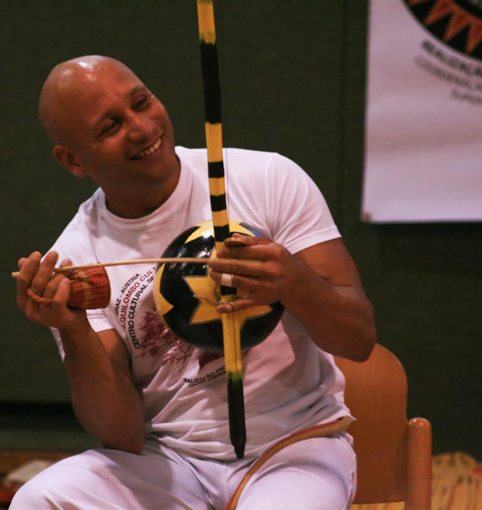
Итак, заметочки от CM Luis Claudio:
- Изобретать в игре, вносить жизнь и идею в заучиваемые движения, оживлять их.
- Не вестись на движения другого партнера, чтобы не начать играть его игру.
- «Кто-то из вас опаздывает на самолет? Нет? Тогда почему вы так торопитесь во время отработки движений?»
Вот тут, надо сказать, сензальцы меня запутали. То они говорят: „следуй движениям партнера, даже зеркаль его иногда, подстраивайся под него, чтобы перехватить его тактику“, то: «не ведись на их финты, сам старайся вести».
Еще я поняла, что иногда совершенно бесполезно задавать мастеру какой-то вопрос по игре, потому, что он уже слишком крут, чтобы вспомнить, как ему было, когда он еще был начинающим капоэйристом и толком ничего не умел. Они уже так высоко, что для них все само собой разумеющееся: «не ведись на финты». Вот сам не ведись на финты молниеносного опасного Mestre Zumbi!
Легким разочарованием было повторение на тренировках моей звезды тех же связок, что были в Питере. Повторенье – мать, конечно, но все-таки три страны хотелось пересечь за чем-то кардинально новым. Зато в очередной раз стало понятно, что для его тренировок пора уже освоить макаку – она так невзначай вставляется в тренировочные связки, что надоело уже не делать ее)
Еще необходимо скачать диск Tony Vargas&Nestor Capoeira “Os fundamentos da malicia” и узнать, что за жизненно важная информация там содержится.
Неожиданным открытием семинара стал Mestre Pulmao.
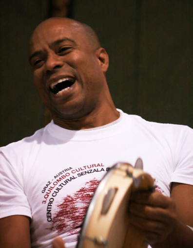До этого я встречала его дважды на эвентах в Сербии, где он был настолько вовлечен в организацию, что как о мастере о нем нечего было сказать. В этот раз удалось провести с ним целый день в Будапеште, потренироваться в Граце, поиграть пару раз и еще поговорить часа 3-4 во время возвращения в Будапешт.
Это очень взрослый, очень влиятельный и известный в Бразилии мастер, с огромным количеством связей и знакомств (кажется, ни одно имя в капоэйре для него не секрет). Любителям олдскульных песен понравилось бы с ним общаться, потому что целый час дороги в Будапешт был посвящен вспоминанию, распеванию и объяснению самых старых песен капоэйры.
Очень хотелось узнать у Pulmao, как он привлек на свои мероприятия такое бешеное количество спонсоров, но по законам жанра наш разговор прервали на его фразе „Значит так, начать надо с того, что…“ Но втайне я уверена, что этому мастеру ничего особенного делать не приходится: он обладает таким колдовским голосом, что просто звонит, кому надо и под чарами этого голоса все решается само собой. Приезжайте послушать его в Москву на семинар Сензалы летом ;)
Mestre Pulmao, кстати, давал занятие по Анголе с занятными вариациями выхода от pe do berimbau, интересно работал с пространством роды.
«Капоэйра Ангола похожа на волейбол – вы отправили мяч, и ждете, когда он возвратится к вам снова, чтобы продолжить игру».
Еще одно однозначное достоинство Mestre Pulmao – то ли возраст и опыт, то ли характер играют роль, но он очень очень очень спокойный. Как сказал бы Шикиньу, supertranquilo. Он никуда не торопится, когда играет, не суетится и не стремится успеть сделать свои фееричные движения. Он спокойно, медленно и достойно играет, видит каждый следующий шаг своего оппонента и там его ловит. Такой мудрый медитирующий местре)))
Но, конечно, главные овации этого семинара сорвал Mestre Zumbi, потому что говорил больше всех комплименты, потому что провел настоящие мастер-классы с истинным значением слова «мастер».
Про овации я не шучу: Mestre Zumbi – это мастер, после тренировок которого ученики устраивают настоящие овации.
Мы с Темой заприметили его еще в первую Сербию – уж больно интеллигентно и умно о нам рассказывал о vadiacao и вселенной в капоэйре. Оказывается, Zumbi – профессиональный преподаватель: ведет в американском университете лекции по этнографии, культурологии, истории Бразилии, антропологии, плюс занятия по капоэйре. В сентябре у него выходит книга, написанная совместно с профессором этого университета.
Каждое занятие Mestre Zumbi – это необходимость работать в полную силу (а ведь не каждый мастер заставляет по-настоящему пахать на тренировке), это идеальное сочетание теории и практики, внимание к деталям и мелочам, точное и умное объяснение смысла происходящего, применимости связки, это одна идея, которая идет из тренировки в тренировку, обрастая новыми мыслями и полезными советами.
Вот то немногое, что мы отрабатывали на его занятиях в эти дни:
- Умение превратить уход от удара в свою атаку. „Даже в уход надо вкладывать эмоции и силу, чтобы он выглядел не как бегство, а как подготовка к нападению“.
- Оживление техники и наполнение ее своей индивидуальностью. Одна из мыслей, которые внедряет всем мастер: «За каждым движением капоэйры должна стоять эмоция, чувство, мысль. С одной лишь четкой техникой ваша игра будет сухой и голой, скучной и чужой, не вашей. Капоэйра дает нам возможность выразить себя, проявить индивидуальность – так сделайте это».
- Борьба со страхом в капоэйре и оцепенение перед неожиданной ситуацией в роде. Готовность к атакам и их трансформация в свою пользу.
Понятно, что у самого Zumbi проблем с выражением индивидуальности и эмоций нет – он вводит игроков в транс любой своей финтой, любым поворотом колена (на что Луис мне так легко предлагает не вестись). За игру он аккуратно и весело показывает, что мог бы уже уничтожить тебя раз, два, три, четыре, пять, еще шесть отсюда, семь отсюда, восемь с этой стороны, девять берегись компассу, десять ну что непонятного – это же мартелу и так далее…
Так как Mestre Zumbi – мастер CM Chiquinho, то семинар проводился официально под его патронажем, он был там самым уважаемым и главным, и вполне заслуженно. Он из тех людей, кто на все возможные проценты отвечает званию «мастер».
Надеемся, что в Москву он тоже когда-нибудь доедет, а вы не окажетесь слишком ленивыми и воспользуетесь шансом его увидеть.
Порадовал на семинаре гость из другой группы Граца — Prof. Cara de Nico (Beira de Mar). Во-первых, он просто классный)) Веселый, красивый, улыбчивый яркий бразилец. Играет отлично от Сензалы, но в их роде чувствует себя очень уютно, с огромным уважением ко всем относится, свою энергию не жалеет, отдает очень много. В первый же день своего пребывания на семинаре он попросил слово и извинился перед Сензалой за то, что в предыдущий день пришло так мало его учеников! Сказал, что всем объявил, но вот видит, что не все вняли его объявлению и ему очень стыдно за них. А на следующий день вместе с ним пришло уже намного больше его ребят, которые наравне с Сензалой занимались и играли. Вот представьте теперь такую ситуацию у нас, хотя бы в Питере. У меня не получается.
После семинара осталось много идей, глобальные и не очень. С какими-то из них надеюсь вас познакомить в ближайшее время.
А пока всем хорошей капоэйры, берегите себя.
И да, берегитесь все – в июне приезжает в Москву самый лучший на свете Mestre Sorriso, после чего бойтесь открывать inside)))
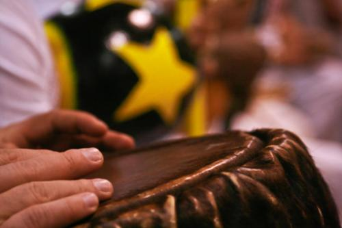
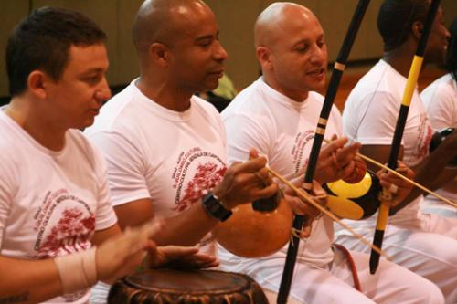
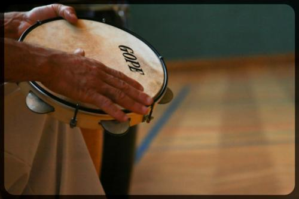
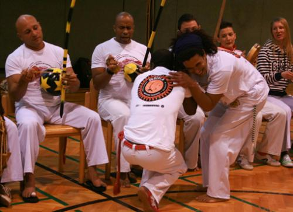
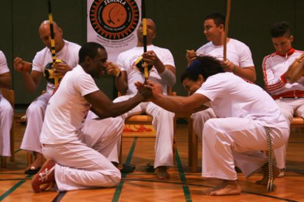
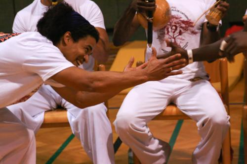
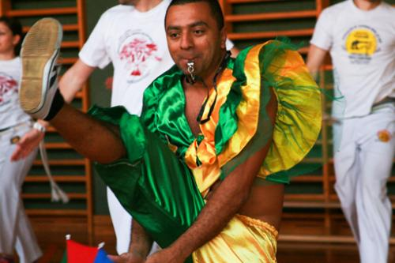
«left» >
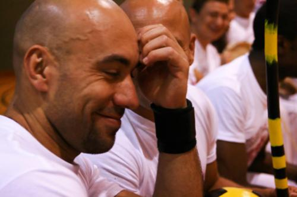
Mestre Zumbi и "Наша Панака")))
Ученики: наш сербский брат Алекс, темнокожий Faia из Португалии и ученица Луиса Клаудио Ursa.